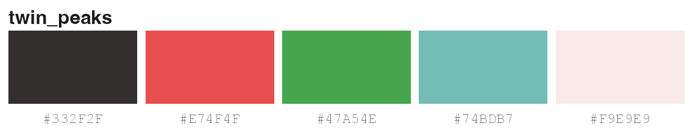
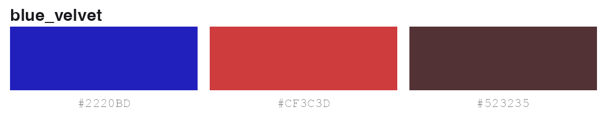
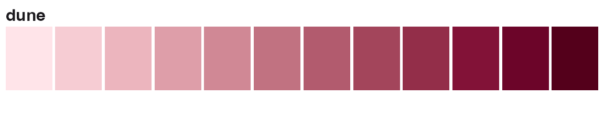
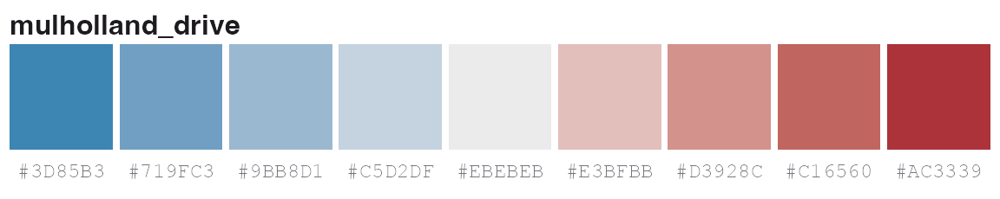
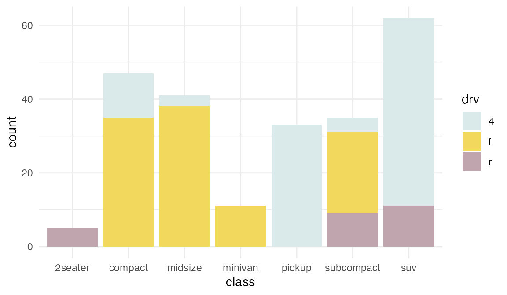
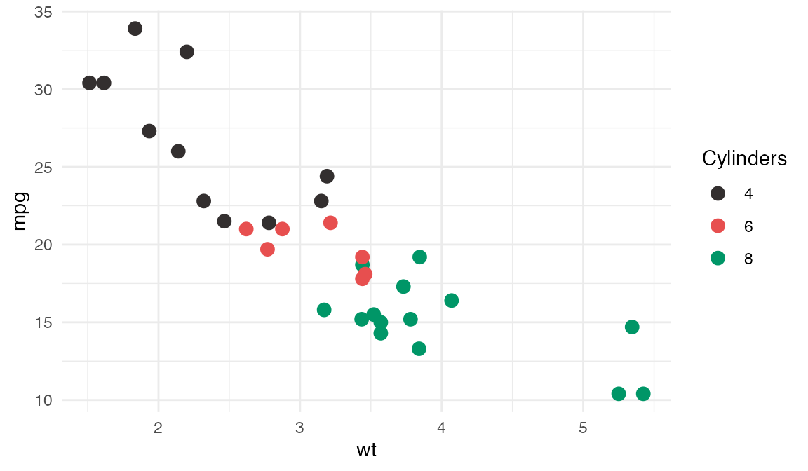
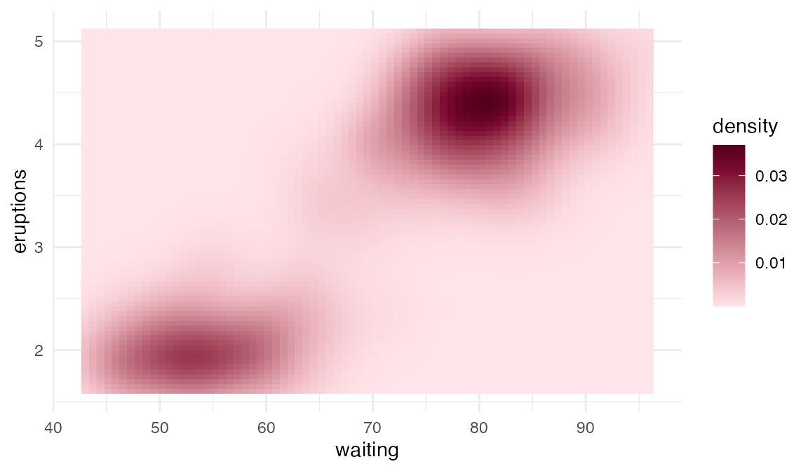
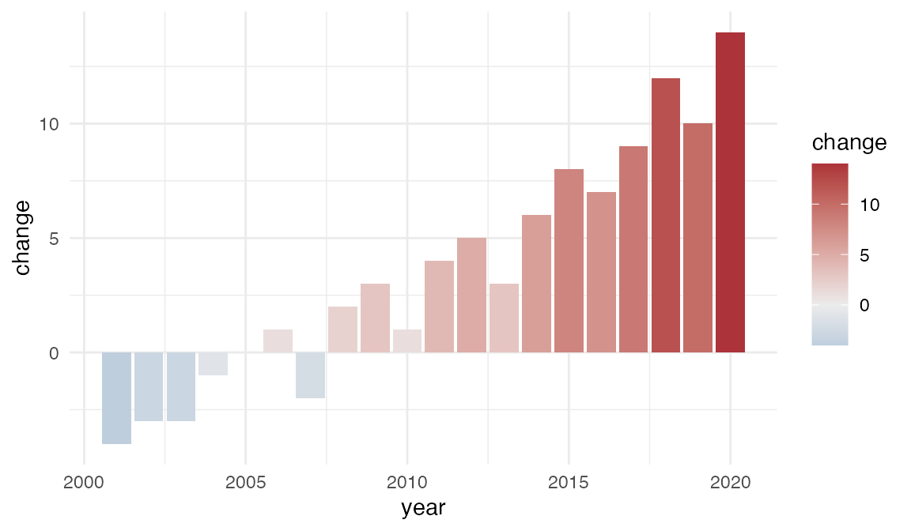
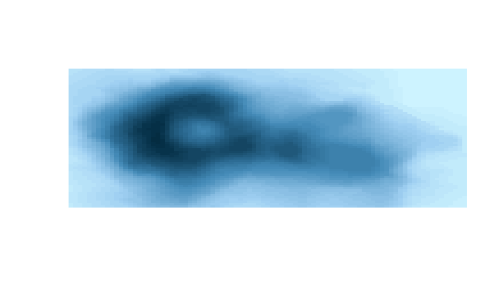

Lynch has three kinds of palette. Pick the kind that matches your data:
| Kind | For | Where |
|---|---|---|
| Discrete | categories | lynch_palettes |
| Sequential | ordered values, low to high | lynch_sequential |
| Diverging | values either side of a midpoint | lynch_diverging |
Picking colours
lynch_palette() returns a palette by name. Printing it
draws the colours.
lynch_palette("twin_peaks")
Ask for fewer colours with n. Discrete palettes have
five colours, so n can be at most five.
lynch_palette("blue_velvet", 3)
Sequential and diverging ramps are interpolated, so they give any number of colours.
lynch_palette("dune", 12, type = "sequential")
lynch_palette("mulholland_drive", type = "diverging")
The result keeps a palette class for printing. Use
unclass() when you want a plain character vector.
unclass(lynch_palette("wild_at_heart"))
#> [1] "#CD5C90" "#E5BF5C" "#771637" "#A5905F" "#515767"
#> attr(,"name")
#> [1] "wild_at_heart"Discrete palettes
There are six film palettes and five colour-blind-safe versions.
names(lynch_palettes)
#> [1] "blue_velvet" "dune" "lost_highway" "mulholland_drive"
#> [5] "twin_peaks" "wild_at_heart" "blue_velvet_safe"Use scale_colour_lynch_d() or
scale_fill_lynch_d() for categories.
ggplot(mpg, aes(class, fill = drv)) +
geom_bar() +
scale_fill_lynch_d("lost_highway") +
theme_minimal()
Reverse the order with direction = -1. If the data has
more categories than the palette has colours, the extra levels are drawn
as NA and you get a warning.
Colour blindness
Every film palette keeps its colours distinct with red-green colour
blindness except blue_velvet. blue_velvet_safe
keeps the four of its colours that do. lynch_accessibility
has the test results.
lynch_accessibility[, c("palette", "n_colours", "deutan", "protan", "rating")]
#> palette n_colours deutan protan rating
#> 1 blue_velvet 5 8.5 6.7 close pair for all viewers
#> 2 dune 5 11.2 11.2 colour-blind safe
#> 3 lost_highway 5 15.1 13.2 colour-blind safe
#> 4 mulholland_drive 5 9.6 8.8 colour-blind safe
#> 5 twin_peaks 5 8.2 8.8 colour-blind safe
#> 6 wild_at_heart 5 8.1 10.8 colour-blind safe
#> 7 blue_velvet_safe 4 17.2 18.1 colour-blind safeAny palette but blue_velvet works for up to five groups.
For Blue Velvet, use blue_velvet_safe with four groups or
fewer.
ggplot(mtcars, aes(wt, mpg, colour = factor(cyl))) +
geom_point(size = 3) +
scale_colour_lynch_d("twin_peaks", name = "Cylinders") +
theme_minimal()
Sequential and diverging scales
scale_colour_lynch_c() and
scale_fill_lynch_c() map numbers to a ramp. The default is
sequential.
ggplot(faithfuld, aes(waiting, eruptions, fill = density)) +
geom_raster() +
scale_fill_lynch_c("dune") +
theme_minimal()
For values either side of a reference point, use
type = "diverging" and set midpoint. Without a
midpoint, the grey centre sits halfway across the data range.
df <- data.frame(
year = 2001:2020,
change = c(-4, -3, -3, -1, 0, 1, -2, 2, 3, 1, 4, 5, 3, 6, 8, 7, 9, 12, 10, 14)
)
ggplot(df, aes(year, change, fill = change)) +
geom_col() +
scale_fill_lynch_c("mulholland_drive", type = "diverging", midpoint = 0) +
theme_minimal()
Only four films have diverging ramps:
names(lynch_diverging)
#> [1] "blue_velvet" "mulholland_drive" "twin_peaks" "wild_at_heart"Base graphics
The palettes are plain colour vectors, so they work anywhere R takes colours.
image(volcano, col = lynch_palette("mulholland_drive", 50, type = "sequential"), axes = FALSE)